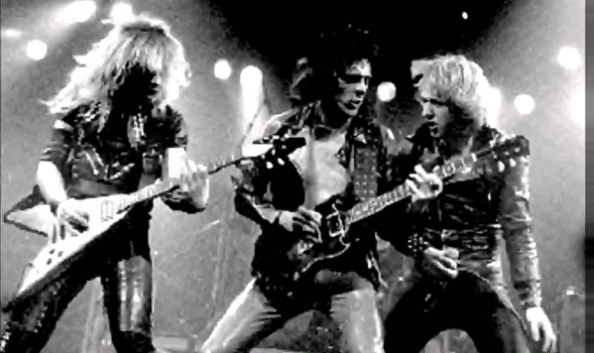

História do Heavy Metal Antecedentes: fim dos anos 1950 e meados da década de 1960  Enquanto o estilo de guitarra típico do heavy metal, construído em torno de riffs e acordes pesados e distorcidos, pode ter suas origens encontradas nos instrumentais do americano Link Wray, no fim da década de 1950, a linhagem direta do gênero se inicia no meio da década seguinte. O blues americano se tornou uma grande influência para os primeiros músicos do gênero na Grã-Bretanha, e bandas como Rolling Stones e The Yardbirds desenvolveram o blues-rock, gravando covers de muitas canções clássicas do blues, frequentemente acelerando seus andamentos. À medida que experimentavam com a música, estasbandas britânicas influenciadas pelo blues e as bandas americanas que elas influenciavam, por consequência desenvolveram o que se tornaria posteriormente a marca registrada do heavy metal, em especial o som alto e distorcido da guitarra. O Kinks desempenhou um papel crucial ao popularizar este som em seu hit de 1964, "You Really Got Me". Uma contribuição significante para este som emergente nas guitarras era a microfonia, fenômeno facilitado por uma nova geração de amplificadores que surgia. Além de Dave Davies, do Kinks, outros guitarristas, como Pete Townshend (The Who) e Jeff Beck (Tridents), experimentavam com a microfonia. Enquanto o estilo de bateria do blues-rock consistia, na maior parte das bandas, de batidas simples, shuffle, em kits pequenos, os bateristas passaram a usar gradualmente técnicas mais vigorosas, complexas e amplificadas, para se equiparar e poder ser ouvido diante do som cada vez mais alto da guitarra. Os vocalistas passaram também a modificar, da mesma maneira, sua técnica, aumentando sua dependência na amplificação, e muitas vezes tornando sua performance mais estilizada e dramática. Em termos de volume, especialmente nas apresentações ao vivo, a postura da banda britânica The Who e sua "parede de Marshalls" foi seminal. Avanços simultâneos na amplificação e na tecnologia de gravação tornaram possível capturar com sucesso em disco o peso deste novo enfoque que surgia. A combinação do blues-rock com o rock psicodélico formou boa parte da base original do heavy metal. Uma das bandas mais influentes nesta fusão de gêneros foi o power trio Cream, que formou um som característico, pesado e maciço, através de riffs em uníssono tocados pelo guitarrista Eric Clapton e o baixista Jack Bruce, bem como o uso extensivo dos bumbos de Ginger Baker. Seus dois primeiros LP, Fresh Cream (1966) e Disraeli Gears (1967), são tidos como protótipos essenciais do futuro estilo. O álbum de estreia do Jimi Hendrix Experience, Are You Experienced (1967), também foi extremamente influente. A técnica virtuosística de Hendrix seria emulada por muitos guitarristas do metal, e o single de maior sucesso do álbum, "Purple Haze", é identificado por muitos como o primeiro hit do gênero. As bandas de acid rock, uma vertente do rock psicodélico, ajudaram a definir o heavy metal; e as bandas do gênero que não deixaram de existir acabaram por se tornar bandas de heavy metal, como o Blue Cheer e o Steppenwolf. Origens: fim da década de 1960 e início da década de 1970 Em 1968 o som que se tornaria conhecido como heavy metal começou a coalescer. Em janeiro daquele ano Blue Cheer, uma banda de São Francisco, Califórnia, lançou um cover do clássico de Eddie Cochran, "Summertime Blues", retirado de seu álbum de estreia, Vincebus Eruptum — canção que muitos consideram a primeira gravação legítima de heavy metal. Naquele mesmo mês outra banda americana, Steppenwolf, lançou seu álbum de estreia, que continha o clássico "Born to Be Wild", cuja letra se refere ao termo "heavy metal". Em julho daquele ano, duas outras gravações que marcaram época foram lançadas: "Think About It", dos Yardbirds — lado B do último single da banda — com uma performance do guitarrista Jimmy Page que antecipou o estilo de metal que lhe tornaria famoso; e In-A-Gadda-Da-Vida, do Iron Butterfly, com sua faixa-título de 17 minutos, um dos principais concorrentes pelo título de primeiro álbum de heavy metal. Em agosto, a versão single de "Revolution", dos Beatles, com sua bateria e guitarra reverberantes, levou estes novos padrões de distorção a um contexto de alta vendagem. O Jeff Beck Group, cujo líder havia sido o antecessor de Page nos Yardbirds, lançou seu álbum de estreia naquele mesmo mês; Truth continha alguns dos "ruídos mais derretidos, farpados e absolutamente divertidos de todos os tempos", abrindo caminho para gerações de guitarristas do gênero. Em outubro a nova banda de Page, Led Zeppelin, tocou pela primeira vez ao vivo. Em novembro o Love Sculpture, do guitarrista Dave Edmunds, lançou Blues Helping, onde interpretavam uma versão agressiva e pulsante da "Dança do Sabre", do compositor de música clássica armênio Aram Khachaturian. O chamado Álbum Branco dos Beatles saiu no mesmo mês, e continha "Helter Skelter", uma das canções mais pesadas já lançadas por uma banda até então. A ópera rock S.F. Sorrow, da banda inglesa The Pretty Things, foi lançada em dezembro, e apresentava canções de "proto-heavy metal", como "Old Man Going." Em janeiro de 1969 o Led Zeppelin lançou o seu álbum homônimo de estreia, que atingiu o 10.º lugar na parada de sucessos da revista americana Billboard. Em julho, o Led Zeppelin e um power trio inspirado no Cream, porém com um som mais cru, o Grand Funk Railroad, tocou no Atlanta Pop Festival. Naquele mesmo mês outro trio com raízes no Cream, liderado por Leslie West, lançou Mountain — um álbum repleto de guitarras pesadas de blues-rock, e vocais rugidos. Em agosto, o grupo — que a esta altura se chama Mountain — tocou um set de uma hora no Festival de Woodstock. O álbum de estreia do Grand Funk, On Time, também saiu no mesmo mês. No outono o álbum Led Zeppelin II atingiu a primeira posição, e o seu single "Whole Lotta Love" chegou à quarta posição na parada pop da Billboard. O Led Zeppelin definiu aspectos centrais do gênero que emergia, com o estilo altamente distorcido de guitarra de Page, e os vocais dramáticos e lamuriosos de Robert Plant. Segundo o Allmusic, o Led Zeppelin foi a banda definitiva do gênero, não apenas pela sua interpretação agressiva e pesada do blues, mas também por terem incorporado a mitologia, o misticismo e uma variedade de outros gêneros ao seu som. Ao fazer isso, eles teriam estabelecido o formato dominante do gênero. Outras bandas, com um som de metal mais "puro", mais consistentemente pesado, também se revelariam igualmente importantes na codificação do gênero. Os lançamentos em 1970 do Black Sabbath (Black Sabbath e Paranoid) e Deep Purple (In Rock) foram cruciais neste ponto. O Black Sabbath havia desenvolvido um som particularmente pesado, em parte devido a um acidente industrial que o guitarrista Tony Iommi havia sofrido antes de cofundar a banda, e feriu sua mão; incapaz de tocar normalmente seu instrumento, Iommi tinha que utilizar afinações mais graves em sua guitarra, para que seus dedos pudessem alcançar as notas desejadas, e usava power chords, que exigiam dedilhados mais simples. O Deep Purple, que havia flutuado entre diversos estilos no seu início, foi levado rumo ao heavy metal, com a entrada, em 1969, do vocalista Ian Gillan e do guitarrista Richie Blackmore, Em 1970 o Black Sabbath e o Deep Purple conseguirem grande sucesso nas paradas britânicas com "Paranoid" e "Black Night", respectivamente. Naquele mesmo ano, três outras bandas britânicas lançaram álbuns de estreia no estilo: Uriah Heep, com Very 'eavy… Very 'umble, UFO, com UFO 1, e Black Widow, com Sacrifice. O Wishbone Ash, embora não fosse comumente identificado como metal, introduziu um estilo duplo de guitarra-solo/guitarra-base que muitas bandas de metal das gerações posteriores adotariam, enquanto a banda Budgie trouxe o novo som do metal para um contexto do power trio. As letras e o imaginário de ocultismo empregados por bandas como Black Sabbath, Uriah Heep e Black Widow se provariam particularmente influentes; o Led Zeppelin também começou a experimentar com estes elementos em seu quarto álbum, lançado em 1971. No outro lado do Atlântico quem ditava as tendências era o Grand Funk Railroad, "a banda de heavy metal mais bem-sucedida dos Estados Unidos desde 1970 até o seu fim, em 1976, [eles] estabeleceram a fórmula de sucesso dos anos 1970: turnês contínuas." Outras bandas identificadas com o metal surgiram nos Estados Unidos, como Dust (primeiro LP em 1971), Blue Öyster Cult (1972), e Kiss (1974). Na Alemanha, o Scorpions estreou com Lonesome Crow, em 1972. Richie Blackmore, que havia despontado como um solista virtuoso em Machine Head (1972), do Deep Purple, abandonou o grupo em 1975 para formar o Rainbow. Estas bandas construíram seu público através de turnês constantes, e shows cada vez mais elaborados. Como mencionado anteriormente, no entanto, ainda existe muito debate acerca de quais bandas merecem realmente o rótulo de "heavy metal", e quais se encaixam apenas na categoria do "hard rock". Aqueles que estão mais próximos das raízes do estilo, no blues, ou que dão maior ênfase à melodia, costumam receber a segunda categorização. O AC/DC, que estreou com High Voltage, em 1976, é um exemplo; seu verbete na enciclopédia de 1983 da Rolling Stone se inicia com "a banda de heavy metal australiana AC/DC…" O historiador do rock Clinton Walker escreveu que "chamar o AC/DC de uma banda de heavy metal nos anos 1970 era tão pouco preciso como é hoje em dia [Eles] eram uma banda de rock 'n' roll que apenas calhava ser pesada o bastante para o metal. A questão envolve não apenas definições em constante alteração, porém também uma distinção permanente entre estilo musical e identificação do público; Ian Christe descreve como a banda "se tornou a escada que levou grandes números de fãs do hard rock para a perdição do heavy metal." Embora o Judas Priest não tenha conseguido colocar um álbum no Top 40 dos Estados Unidos até 1980, para muitos ela foi a banda definitiva de heavy metal pós-Sabbath; seu ataque duplo na guitarra, com andamentos rápidos e um som metálico, mais limpo e sem influências do blues, passou a ser uma grande influência nos artistas que se seguiram à banda. Enquanto o heavy metal crescia em popularidade, a maior parte dos críticos não parecia ter se apaixonado pela música; levantaram objeções quanto à adoção que o estilo havia feito dos espetáculos visuais e de outros artifícios comerciais, porém a principal ofensa parecia ser o seu suposto vazio musical, e em suas letras: ao criticar um álbum do Black Sabbath no início da década de 1970, o importante crítico Robert Christgau o descreveu como uma "exploração amoral, tola… enfadonha e decadente". Mainstream: final dos anos 1970 e década de 1980 As vendas dos discos de heavy metal diminuíram drasticamente no final da década de 1970, perdendo espaço para o punk rock, disco e outros tipos de rock. Com as grandes gravadoras fixadas no punk, muitas bandas britânicas novas de heavy metal foram influenciadas pelos movimentos agressivos, sons de alta energia e tendência de baixa fidelidade e "faça você mesmo". Bandas de metal underground começaram a surgir com gravações feitas de forma independente e barata para pequenas audiências. O Motörhead, fundado em 1975, foi a primeira banda importante a ficar em uma posição intermediária entre o punk e o metal. Com a explosão do punk em 1977, outras bandas seguiram a mesma linha. Não demorou até os jornais musicais britânicos como o NME e Sounds tomarem conhecimento do que foi batizado por Geoff Barton como movimento New Wave of British Heavy Metal ("Nova Onda do Heavy Metal Britânico"). O NWOBHM, que incluía bandas como Iron Maiden, Saxon e Def Leppard, deu uma nova carga de energia ao gênero. Seguindo o exemplo de Judas Priest e Motörhead, as bandas de heavy metal endureceram os seus sons, reduzindo os elementos do blues e colocando andamentos cada vez mais rápidos. Em 1980, o NWOBHM invadiu o mainstream, com álbuns do Iron Maiden e Saxon, bem como Motörhead, atingindo o top 10 das paradas britânicas. Embora menos bem-sucedidas comercialmente, outras bandas do NWOBHM tais como Venom e Diamond Head, também tiveram uma influência significativa no desenvolvimento do metal. Em 1981, o Motörhead tornou-se a primeira banda desta nova geração a atingir o topo das paradas do Reino Unido com No Sleep 'til HammersmithEnquanto isso, as primeiras bandas de heavy metal foram perdendo o centro das atenções. O Deep Purple havia acabado com a saída de Ritchie Blackmore em 1975, e o Led Zeppelin se dissolveu após a morte do baterista John Bonham em 1980. O Black Sabbath era constantemente ofuscado pela banda que abria os seus shows, o Van Halen. Eddie Van Halen estabeleceu-se como um dos melhores guitarristas de sua época — seu solo em "Eruption", no álbum Van Halen, é considerado um marco. Randy Rhoads e Yngwie Malmsteen também eram guitarristas destacados pela sua habilidade, associados com o que seria conhecido como metal neoclássico. A inserção de elemento da música clássica tinha começado com Blackmore e pelo guitarrista dos Scorpions, Uli Jon Roth; essa nova geração ocasionalmente fazia uso da guitarra clássica (violão), como Rhoads fez em "Dee" de Blizzard of Ozz (1980), o primeiro álbum solo do antigo vocalista do Sabbath, Ozzy Osbourne. Inspirados pelo sucesso do Van Halen, uma outra vertente do metal começou a se desenvolver no sul da Califórnia ao final da década de 1970. Vindas dos clubes da Sunset Strip em Los Angeles, bandas como Quiet Riot, Ratt, Mötley Crüe e W.A.S.P. foram influenciadas pelo heavy metal tradicional do início da década de 1970, incorporando as performances teatrais (às vezes com maquiagem) do glam rock de bandas como Alice Cooper e Kiss. As letras dessas bandas de glam rock normalmente enfatizavam o hedonismo e o comportamento selvagem. Musicalmente, o estilo era distinguido pelos rápidos solos de guitarra shred, coros e uma abordagem melódica relativamente pop. O movimento do glam metal — juntamente com os estilos semelhantes, como o da banda nova-iorquina Twisted Sister — tornou-se uma grande força no espectro do rock. Nos moldes do movimento New Wave of British Heavy Metal, o Judas Priest lançou British Steel (1980) enquanto o heavy metal se tornava cada vez mais popular no início da década 1980. Muitos artistas do gênero se beneficiaram pela exposição da MTV desde 1981 — as vendas muitas vezes disparavam quando os videoclipes das bandas eram exibidos no canal. Vídeos do Def Leppard para o álbum Pyromania (1983) ajudaram a banda a conseguir status de superstars nos Estados Unidos e o Quiet Riot tornou-se a primeira banda nacional de heavy metal a chegar ao topo da parada da Billboard com Metal Health (1983). A popularidade do metal já permitia a participação em eventos de grande porte, como no US Festival de 1983 na Califórnia que contou com Ozzy Osbourne, Van Halen, Scorpions, Mötley Crüe e Judas Priest, no chamado "dia do metal". No Brasil, o Rock in Rio em 1985, contou com vários nomes importantes do metal da época. Entre 1983 e 1984, o heavy metal passou de 8% para uma quota de 20% de todas as gravações vendidas nos Estados Unidos. Várias revistas profissionais dedicadas ao gênero foram lançadas, como a Kerrang! (em 1981) e a Metal Hammer (em 1984), bem como uma série de publicações de fãs. Em 1985, a Billboard declarou: "O Metal ampliou sua base de audiência. A música de metal não é mais de domínio exclusivo de adolescentes do sexo masculino. O público do metal tornou-se mais velho (em idade universitária), jovem (pré-adolescente) e mais feminino. Em meados da década de 1980, o glam metal era presença dominante nas paradas dos EUA, nos canais musicais e na programação das casas de shows. Novas bandas, tais como os californianos do Warrant e também bandas da costa leste, como Poison e Cinderella, conseguiram grande sucesso, enquanto Mötley Crüe e Ratt continuavam populares. Preenchendo a lacuna entre o hard rock e o glam metal, o Bon Jovi de Nova Jérsei conseguiu um enorme sucesso com o seu terceiro álbum, Slippery When Wet (1986). O estilo semelhante da banda sueca Europe fez com que chegassem ao topo das paradas internacionais, com o álbum The Final Countdown (1986). A sua faixa-título tornou-se um hit número 1 em 25 países. Em 1987, estreou na MTV o programa Headbangers Ball, dedicado exclusivamente a videoclipes de heavy metal. No entanto, o público do metal começou a se dividir e muitos começaram a favorecer estilos mais underground e pesados, desacreditando os estilos mais populares como o "light metal" ou "hair metal". Uma banda que atingiu diversos públicos foi o Guns N' Roses. Em contraste com os seus conterrâneos do glam metal de Los Angeles, eles eram vistos como uma banda mais crua e pesada. Com o lançamento do álbum de estreia, Appetite for Destruction (1987) conseguiram reinventar quase sozinho o estilo da Sunset Strip por vários anos. No ano seguinte, o Jane's Addiction surgiu da mesma cena dos clubes de hard rock de Los Angeles, com seu famoso álbum Nothing's Shocking. Na crítica do álbum, a Rolling Stone declarou: "Jane's Addiction são os verdadeiros herdeiros do Led Zeppelin." O grupo foi o primeiro a ser identificado como "metal alternativo", tendência que viria à tona na próxima década. Enquanto isso, novas bandas como o Winger de Nova Iorque e Skid Row de Nova Jérsei sustentavam a popularidade do glam metal. Outros gêneros do metal: décadas de 1980, 1990, 2000 e 2010 A maioria dos subgêneros do heavy metal se desenvolveram na década de 1980, fora do mainstream comercial. O crítico Garry Sharpe-Young, autor de uma enciclopédia multivolume sobre o metal, separa o gênero underground em cinco grandes categorias: thrash metal, death metal, black metal, power metal e os subgêneros relacionados ao doom e gothic metal. Algumas Bandas que Você deve conhecer: Formulario de pesquisa: O que você está achando sobre este site? Ajude-nos a melhorar CLIQUE AQUI Fonte: Data: 13/03/2021 – Sabado Horario: 14:39:46 Criado e Desenvolvido por: Pedro Rammé Figueira